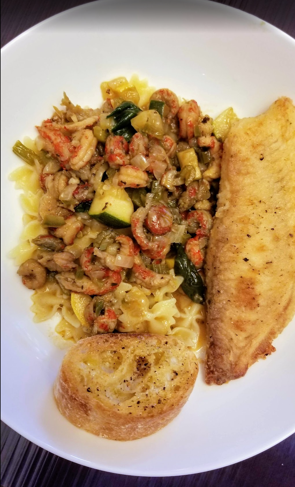

Crawfish Etouffee

Ingredients
- 2 lbs crawfish and fat
- 2 yellow onions, chopped
- 1 stalk celery
- 1 bell pepper, chopped
- 1 jalapeno, seeded and chopped
- 2 cloves garlic, minced
- 3 tbs oil
- 3 tbs flour
- 1 C chicken or vegetable stock
- 2 sticks butter (8 oz)
- 2 tsp paprika
- 2 tsp salt
- 1½ Tony Cacherie
- ½ tsp black pepper
- ½ tsp white pepper
- ½ tsp red pepper
- ½ tsp Colman's dry mustard
- 1 tsp basil
- ½ tsp thyme
- 3 tbs parsley flakes
- 6 green onions
Directions
- In sauté pan, melt the butter over medium heat.
- When fully melted, turn off the heat and add crawfish, crawfish fat, garlic, parsley, basil, green onions, and seasonings.
- Allow the crawfish to steep in the seasoned butter until you're ready to add them to the stock. This will season them without overcooking.
- Make dark brown roux with flour and oil in black iron pot.
- Add the onion, bell pepper, jalapeno and celery and remove from heat. Stir mixture until cool (about 5 minutes).
- In separate pot, bring the stock to a boil and add 1 C to roux mixture. Incorporate fully and bring mixture back to low boil for 5 minutes.
- Add crawfish mixture to roux mixture and simmer for 20 minutes. Sprinkle with parsley and serve over rice.
Michael Fritsche
mbf@fritsche.org